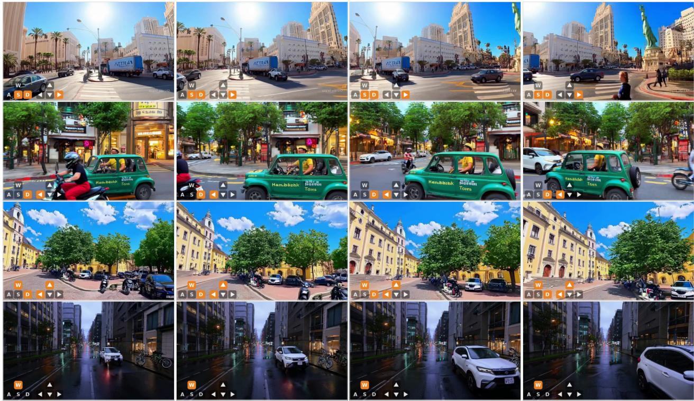
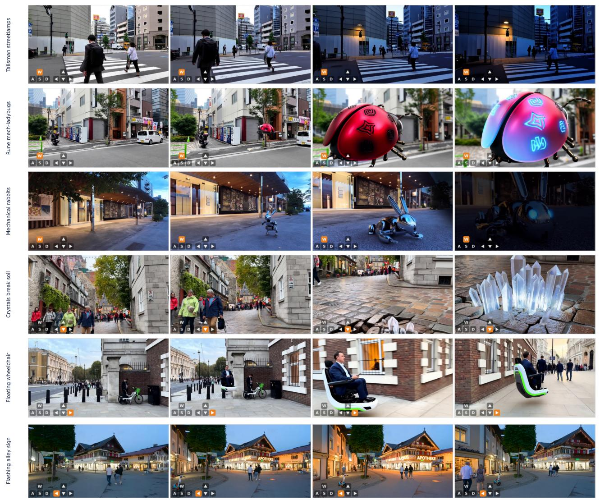

BiWM：它和通用视觉自监督的关系在于：从预训练视频 backbone 出发做双向自回归交互 world model，补充 Next Forcing 的 causal 路线
高相关；详见方法、贡献和实验边界。
BiWM: Advancing Open-Source Interactive Video World Models with Bidirectional Autoregression arXiv 今日公告 原文链接
编号2606.10135优先级P1类别arXiv 今日公告会议arXiv 今日公告方法从预训练视频 backbone 出发做双向自回归交互 world model，补充 Next Forcing 的 causal 路线来源arXiv / OpenReview
先说结论。它和通用视觉自监督的关系在于：从预训练视频 backbone 出发做双向自回归交互 world model，补充 Next Forcing 的 causal 路线。 高相关；详见方法、贡献和实验边界。

Figureure 1 · Overview of BiWMFigure 1 Overview of BiWM. From a pretrained bidirectional video foundation model, BiWM runs just two short training stages—camera/action control fine-tuning and few-step DMD distillation, both keeping full bidirectional attention—to obtain a bidirectional autoregressive interactive world model. The recipe uses only two training stages, is highly efficient (a few hundred steps on 8×H200 GPUs), self-corrects through bidirectional rollout for stable longhorizon generation, and attains high fidelity with strong controllability. Figure 2 Interactive world exploration with BiWM. Driven by discrete keyboard+mouse actions, BiWM lets a user explore a generated world. Text-to-video rollouts on Sekai-domain street scenes, each row navigated under a different constant discrete camera action—from top: backward-right + yaw-right, right + yaw-left, forward-right + pitch-up, yaw-left, and forward, static look. The bottom-left joystick overlay shows the action; the camera obeys each prescribed translation and look direction while preserving scene fidelity.这张图概括 BiWM 的整体方法流程。阅读时先看模块之间传递的训练信号，再看作者如何把目标拆成可优化的子问题。

Figureure 5 · Event generation / real-time event editingFigure 5 Event generation / real-time event editing. BiWM injects prompt-specified, fantastical events into real street scenes while the camera moves (joystick overlay, bottom-left). Top to bottom: glowing talisman streetlamps, rune-covered mechanical ladybugs that repel insects, mechanical rabbits, crystal clusters breaking through the soil, a self-driving floating wheelchair, and a flashing alley advertisement sign; each is shown over four frames. The event is specified purely by text and can be introduced or switched mid-rollout in real time. We release the event dataset and scripts. Qualitative illustration, not a benchmark.这张图来自论文 PDF 的结构化抽取。当前用于辅助理解 BiWM 的方法或实验，请结合正文精读段落一起看。
核心问题
它和通用视觉自监督的关系在于：从预训练视频 backbone 出发做双向自回归交互 world model，补充 Next Forcing 的 causal 路线。
方法拆解
从预训练视频 backbone 出发做双向自回归交互 world model，补充 Next Forcing 的 causal 路线